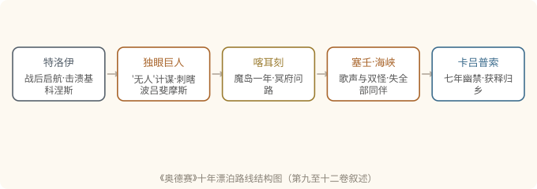

奥德赛
一、基本信息
| 作者 | 荷马 |
|---|---|
| 成书/出版 | 约前725—前675年写定（Britannica Odyssey 条目） Odyssey — Encyclopaedia Britannica（百科全书） |
| 国别/地区 | 古希腊 |
| 时代 | 古代 · 上古 |
| 体裁 | 英雄史诗（长篇叙事诗，24卷） |
| 语言 | 希腊语（荷马式希腊语） |

二、创作背景
《奥德赛》与《伊利亚特》并称荷马两大史诗：12109行、24卷（Britannica Odyssey 条目），写定年代约前725—前675年（Britannica），首部印刷本1488年佛罗伦萨版（Britannica）。
与《伊利亚特》的战争史诗不同，《奥德赛》是'归乡史诗'（nostos）：十年特洛伊战争之后，奥德修斯又漂泊十年才回到伊萨卡——'homecoming'（归乡）成为西方文学的基本母题之一（Britannica Odyssey 条目：themes include nostos）。
现代译本：菲茨杰拉德（1961）、拉蒂摩尔（1965）、法格勒斯（1996）等20世纪诸译本（Britannica Odyssey 条目）。
三、内容脉络
第一—四卷：伊萨卡家中——奥德修斯之妻佩涅洛佩以织寿布拆寿布之计拖延一百余家求婚者；雅典娜促使儿子忒勒马科斯外出寻父。
第五—十二卷：奥德修斯离开卡吕普索的海岛（神许其归乡），遭遇风暴、抵达费埃克斯人的宫廷，向国王阿尔基诺奥斯讲述十年漂泊：独眼巨人波吕斐摩斯（'无人'计谋）、魔女喀耳刻、冥府之行、塞壬歌声、斯库拉与卡律布狄斯、太阳神牛群（同伴尽灭）。第九至十二卷为奥德修斯的倒叙（Britannica：IX–XII are his retrospective telling）。
第十三—二十四卷：费埃克斯人送奥德修斯归乡；他乔装乞丐进入家中，与忠犬阿尔戈斯、老乳母欧律克勒娅相认，通过拉弓竞赛（无人能开的他的大弓）亮明身份，与儿子合谋杀死全部求婚者；与佩涅洛佩以'橄榄树婚床'的秘密相认（Britannica：proves his identity via the marriage bed built from a living olive tree）。
四、主要人物表
| 人物 | 身份 | 说明 |
|---|---|---|
| 奥德修斯 | 伊萨卡国王 | '足智多谋的'（polymetis）——以智慧而非蛮力取胜的英雄，谎言与真实之间的大师 |
| 佩涅洛佩 | 奥德修斯之妻 | 忠诚与狡黠的化身：织拆寿布、试探丈夫的婚床 |
| 忒勒马科斯 | 奥德修斯之子 | 从被欺的少年到父亲助手的成长线（'忒勒马科斯之旅'） |
| 雅典娜 | 智慧女神 | 奥德修斯的守护神，多次化形相助 |
| 波吕斐摩斯 | 独眼巨人 | '无人'计谋的受害者——野蛮（非人食人）与文明的对立 |
| 喀耳刻、卡吕普索 | 魔女与女神 | 以欢愉诱惑阻止归乡的女性力量 |
| 安提诺奥斯 | 求婚者首领 | 被第一个射杀的骄横求婚者 |
五、主题与艺术特点
- 归乡（nostos）与身份：奥德修斯的十年漂流是一场对'我是谁'的反复回答——从'无人'到真名的宣告，身份即叙事（Britannica：nostos 为核心主题）。
- 好客伦理（xenia）：费埃克斯人的盛情与求婚者的僭越——'客谊受宙斯保护'（Britannica：xenia, guest-friendship protected by Zeus）是贯穿全诗的道德标尺。
- 狡计与文明：谎言、伪装、延迟——奥德修斯的'多谋'重新定义了英雄主义（与阿喀琉斯的武力型英雄对照）。
- 神意与自责：同伴之死皆因违背禁忌（太阳神牛群）——人的责任与神的力量边界清晰（Britannica：divine intervention and human responsibility）。
六、影响与评论
- Britannica Odyssey 条目：'homecoming' 主题、结构（in medias res 开场、倒叙）与人物塑造（智慧型英雄）成为后世叙事文学的原型。
Odyssey — Encyclopaedia Britannica（百科全书） - Britannica Homer 条目：与《伊利亚特》同为古典欧洲传统的奠基石，经维吉尔《埃涅阿斯纪》直通西方文学主流。
Homer — Encyclopaedia Britannica (by Geoffrey S. Kirk)（百科全书） - 后世重写：但丁《神曲》（尤利西斯章）、乔伊斯《尤利西斯》（1922，以一日对应全诗）、电影《奥德赛》与当代'回家'叙事——'奥德赛'一词本身已进入多国语言（本条为文学史通说，具体书目待核）。
Odyssey — Encyclopaedia Britannica（百科全书） - Britannica Odyssey 条目：世纪译本史（Fitzgerald/Lattimore/Fagles 等）显示其在英语世界的持续生命力。
Odyssey — Encyclopaedia Britannica（百科全书）
七、阅读建议
- 人名地名繁密（费埃克斯、皮洛斯等），备地图与人物表。
- 第一卷至第四卷'忒勒马科斯线'会让期待奥德修斯登场的读者失去耐心——这是结构设计（悬念），不是冗长。
- 程式化语句与史诗明喻需要朗读体会。
- 中译：王焕生译《奥德赛》（人民文学出版社）——通行本；陈中梅译注本（含导论）。
- 英译：Emily Wilson《Odyssey》（2017，首个女性英译，五音步）与 Fagles 译本。
- 辅助：《奥德赛》地图册与 Ian Morris 等的导读。
先读第五至九卷（奥德修斯的漂泊叙述，最精彩）→ 再读第一至四卷补家中线 → 最后读第十三卷之后的复仇与相认 → 对照《伊利亚特》第24卷看荷马如何写'和解'。
八、待核实
- 写定年代（前725—前675）为 Britannica 口径；与《伊利亚特》的先后关系学界有争论。
- 行数12109与'首印1488'出自 Britannica Odyssey 条目，各校本微异。
- 忒勒马科斯线（'Telemachy'）的叙事功能学界有专论，本页从简。
- 中译本细节（王焕生译名）与陈中梅本出版信息待核。